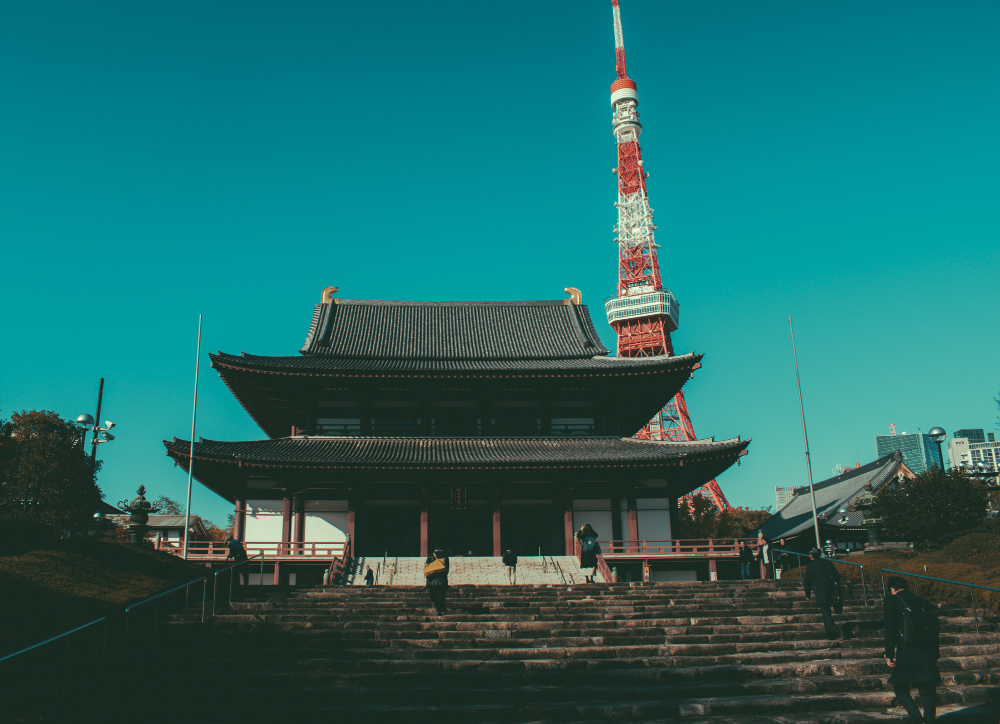
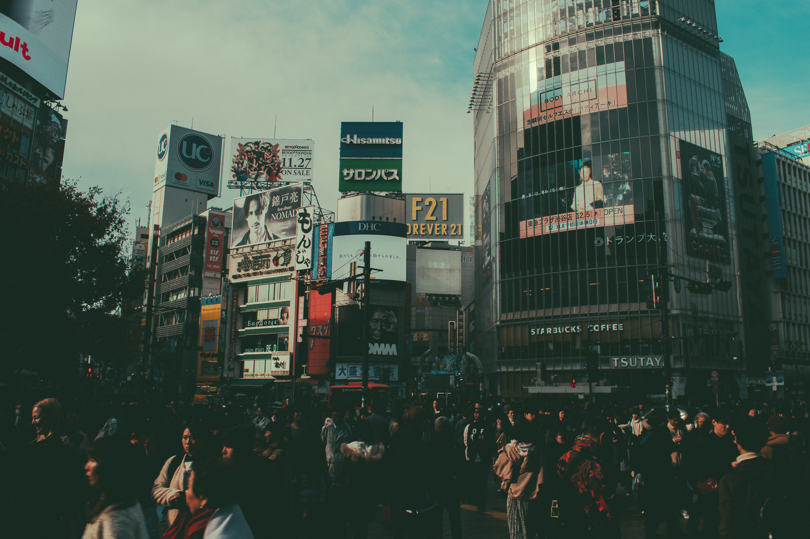

"Lost in Japan" is a series of photographs for my PHOT40 Beginning Photography class, however instead of black and white images I decided to give it color and made some changes to the exposure. I took these images personally when I traveled to Japan December of 2019. I was very proud of these photographs because I was able to capture a composition I really liked. The trip to Japan was a very eye-opening experience where once again every corner is worth taking a photo of.

